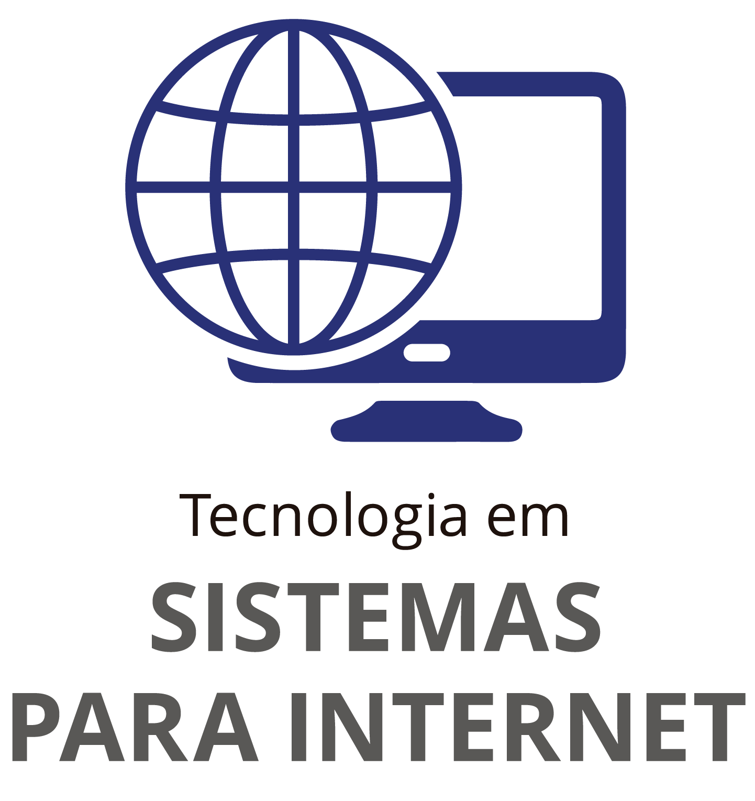

Forma profissionais que analisam, projetam, implementam e coordenam infraestruturas de Tecnologia da Informação e Comunicação- TIC, atendendo a necessidade de mudanças provocadas pelas inovações tecnológicas nas empresas.
O curso possui ênfase em engenharia de software, atuando em metodologias de construção de projetos, qualidade de software, integridade e segurança da informação, inteligência artificial, administração de banco de dados, hardware, rede de computadores, gestão de projetos de TI, consultoria tecnológica, desenvolvimento de sistemas, entre outros.
Caso esteja interessado em saber mais detalhadamente sobre o curso de ADS da Fatec Jales, visite a página oficial do curso no site oficial através desse link.

Formar profissionais com competências tanto em tecnologias de gestão, quanto de produtos e processos, visando o entendimento das principais questões relacionadas ao Agronegócio brasileiro e produzindo, como conseqüência, direta ou indireta, intervenção na multiplicidade de variáveis dos segmentos agroindustriais públicos ou privados.
Atuam na área de empresas e organizações do Agronegócio bem como instituições de ensino e pesquisa.
Além disso, por meio de permanente atualização e investigação tecnológica, pretende-se construir conhecimentos relevantes para a sociedade e igualmente contribuir com a discussão das políticas públicas e privadas relativas ao setor.
Caso esteja interessado em saber mais detalhadamente sobre o curso de Agronegócio da Fatec Jales, visite a página oficial do curso no site oficial através desse link.
O CST (Curso Superior de Tecnologia) em Gestão Empresarial tem como objetivo propiciar a formação de profissionais que possam contribuir para a inovação e melhoria de processos nas organizações, antecipando aos problemas, resolvendo-os e assim poder minimizar custos e maximizar benefícios da atividade econômica empresarial, dentro da perspectiva ética e sustentável e que atuem de forma eficiente e eficaz nas diversas áreas de administração e negócios.
A organização curricular de todas as atividades do curso visa desenvolver conhecimentos, habilidades e atitudes para: Analisar, diagnosticar, planejar, implementar e controlar a partir da interação dos aspectos qualitativos e quantitativos.
Caso esteja interessado em saber mais detalhadamente sobre o curso de Gestão Empresaria da Fatec Jales, visite a página oficial do curso no site oficial através desse link.

O Curso Superior de Tecnologia em Sistemas para Internet tem como finalidade oferecer aos seus estudantes formação de nível superior, gratuita e de qualidade, proporcionando aos tecnólogos conhecimentos e formação integral, com base nas tendências da competitividade contemporânea e internacional, tornando-os capazes de intervir no desenvolvimento econômico e social da região na qual o curso se insere observadas as práticas da Ética e cidadania.
O Tecnólogo em Sistemas para Internet ocupa-se do desenvolvimento de programas, de interfaces e aplicativos, do comércio e do marketing eletrônicos, além de sítios e portais para Internet e intranet. Esse profissional gerencia projetos de sistemas, inclusive com acesso a banco de dados, desenvolve projetos de aplicações para a rede mundial de computadores e integra mídias nos sítios da Internet.
Caso esteja interessado em saber mais detalhadamente sobre o curso de Sistemas de Internet da Fatec Jales, visite a página oficial do curso no site oficial através desse link.
ENTREM EM CONTATO
- Rua Vicente Leporace, 2630, Jd. Trianon
- CEP 15703-116, Jales/SP - Brasil
- (17) 3624-3800
- 17 99676-2867
-
EMAIL
- fatecjales@fatecjales.edu.br
CURSOS
- Agronegócio
- Análise e Desenvolvimento de Sistemas
- Gestão Empresaria
- Sistemas para Internet